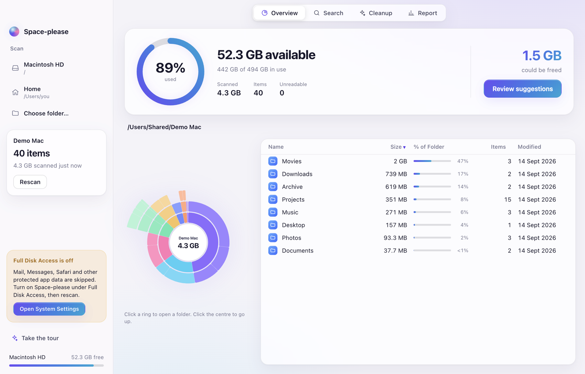
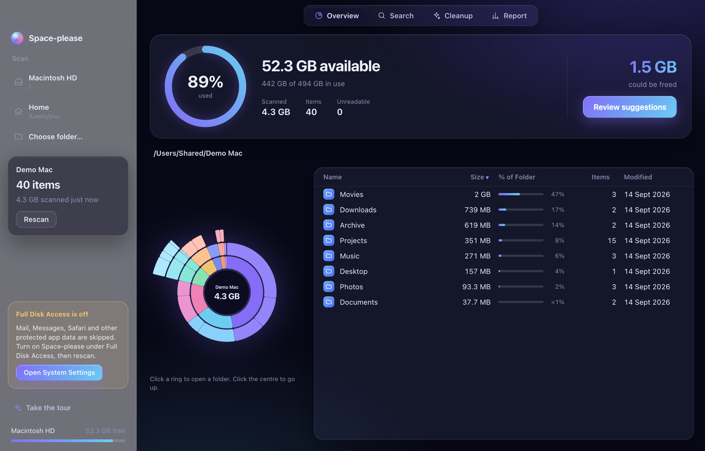
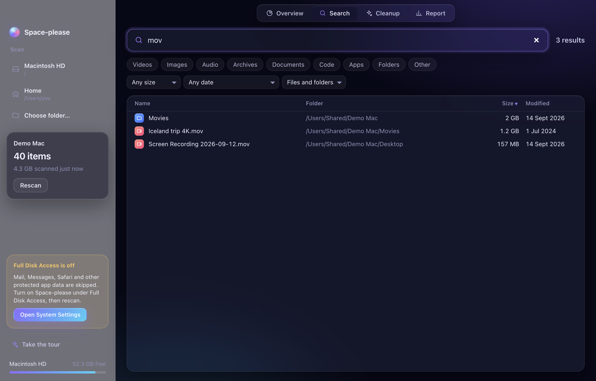
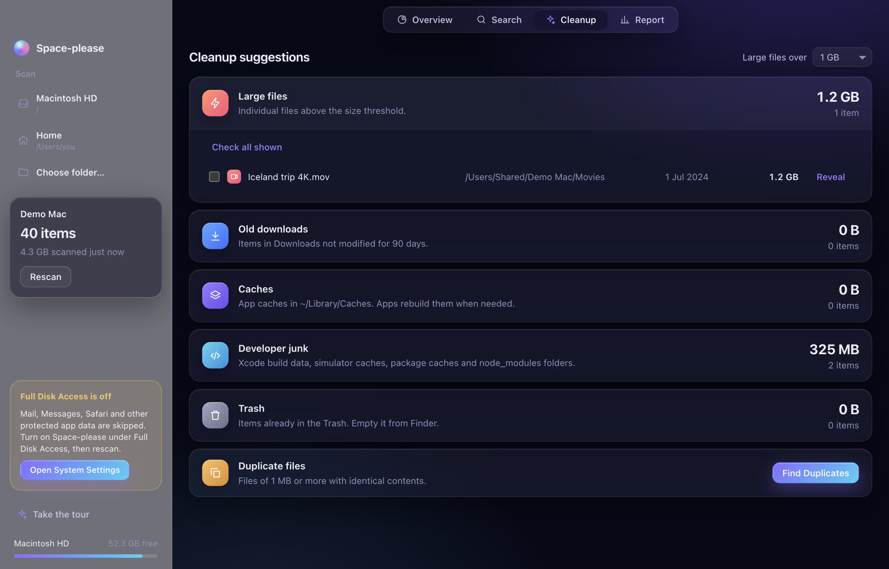
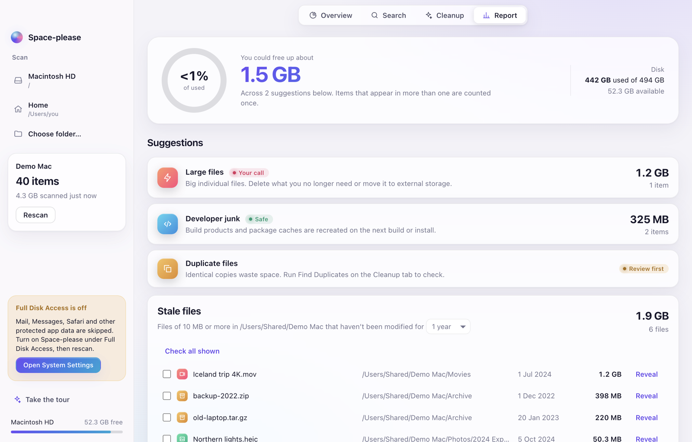
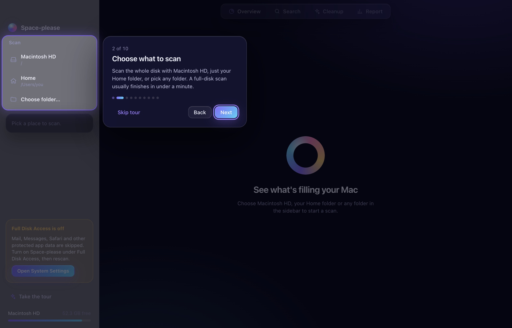

Overview
A storage ring shows how full your disk is. The sunburst maps every folder by size: click a ring to open a folder, click the centre to go back up. The table beside it lists what's inside, biggest first.

Space-please scans every file on your Mac in seconds, maps where your storage went, and helps you clear it safely. Free, private and open source.
Version 1.0 for Apple Silicon Macs running macOS 15 or later.

A storage ring shows how full your disk is. The sunburst maps every folder by size: click a ring to open a folder, click the centre to go back up. The table beside it lists what's inside, biggest first.

Find anything by name across millions of files instantly. Filter by videos, images, archives, apps and more, or by size and date, then act on the results straight away.

Large files, old downloads, app caches, developer junk such as Xcode build data and node_modules, the Trash, and duplicate files confirmed by content hashing. Tick what you don't need.

See how much you could free, with every suggestion rated Safe, Review first or Your call. Spot stale files you haven't touched in years and what's been added recently.

New to Space-please? A short walkthrough highlights each option in the real app, from choosing what to scan to deleting safely. Replay it anytime with Take the tour.

Every removal goes to the macOS Trash, so anything can be put back from Finder.
System locations, your Home folder, the scanned folder and the app itself can't be removed.
You always see the item count and total size first, with a second check for big removals.
No uploads, analytics or accounts. Scan results are stored locally and nowhere else.
Get Space-please.dmg from the latest release.
Open the DMG and drag Space-please onto the Applications folder.
The app is free and not signed with a paid Apple certificate. The first time, click Done on the warning, then go to System Settings, Privacy & Security, and click Open Anyway.
For complete results, turn on Space-please under System Settings, Privacy & Security, Full Disk Access, then reopen the app and scan.
xattr -dr com.apple.quarantine /Applications/Space-please.appA multithreaded Swift scanner feeds an Electron and React app with a worker-thread engine designed for millions of files. Read the code, build it yourself, or contribute.
Build from sourcegit clone https://github.com/Thirumurugan7/Space-please.git
cd Space-please
nvm install && nvm use
npm install --prefix app
npm run devYes. It's open source under the MIT licence, with no trials, subscriptions or ads.
Apple Silicon Macs (M1 or newer) running macOS 15 Sequoia or later.
Apple shows this for apps that aren't signed with a paid developer certificate. Open it once through System Settings, Privacy & Security, Open Anyway, and it opens normally from then on.
macOS hides some folders, such as Mail and Messages data, unless an app has Full Disk Access. Without it Space-please still works, but those folders are skipped.
Nothing is removed without your confirmation, items only go to the Trash where you can restore them, and system folders are blocked entirely.
Not yet. The scanner relies on macOS. Contributions for other platforms are welcome on GitHub.